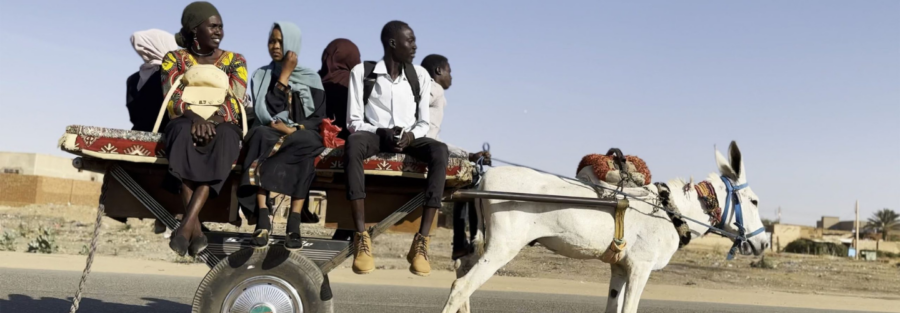

KHARTOUM (2025)
KHARTOUM (Dir. Anas Saeed, Rawia Alhag, Ibrahim Snoopy Ahmad, Timeea Mohamed Ahmed, Phil Cox, 2025, Sudan/United Kingdom/Germany/Qatar, 78 min, DCP)
KHARTOUM (2025) is a documentary that follows five individuals in their journeys of displacement and resistance after the outbreak of civil war in 2023. Footage taken before the war is blended with green-screen and animations to recount the memories of the five individuals. The film bears witness to both the enduring hardship of war in Sudan and the resilience of the Sudanese spirit.
Following the screening of the documentary, there will be a virtual Q&A with filmmaker Timeea Mohamed Ahmed, one of the film’s five directors. Abdeljaleel Ismail, an MFA student in the Writing for Screen and Stage Program, will moderate the Q&A.
This event is hosted by BlackBoard Magazine, The Block Museum of Art, and ChicagoForSudan (CFS). BlackBoard Magazine is Northwestern’s only Black-interest magazine. ChicagoForSudan is an organization that strives to serve, support, and empower our local immigrant community and the people of Sudan by providing direct integration aid, essential humanitarian relief, and fostering a vibrant, cross-cultural ecosystem.
The event is presented in collaboration with the Program of African Studies, the Middle East and North African Studies Program, the Middle East and North African Student Association, and the African Student Association.